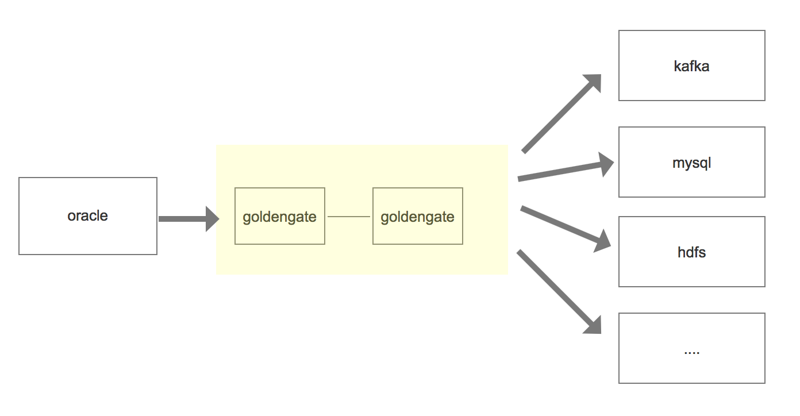

Oracle Goldengate
在oracle中，goldengate的单向配置仅允许一个方向的数据工作流，仅从源到目标。源系统goldengate提取组从重做日志文件或archivelog中捕获更改信息，并将Oracle goldenGate跟踪转发到远程系统
具体的过程如下:

它包含以下进程：
- manager: 在复制所涉及的所有服务器上运行。它是控制所有GG活动的主过程
- extract: 在源数据库服务器上运行。如果是集成捕获，它将直接或间接从Oracle数据库中提取数据
- DATAPUMP: 在源数据库服务器上运行。这是一个可选过程，它将提取的数据从源数据库服务器传输到目标数据库服务器。 （可选，因为EXTRACT流程可以直接执行此操作）。
- SERVER COLLECTOR: 在目标数据库服务器上运行。从源数据库服务器接收提取的数据，并将其暂存到目标数据库服务器上的本地跟踪文件中，以便REPLICAT进程将其应用于目标数据库。
- REPLICAT: 在目标数据库服务器上运行。从目标数据库服务器上的本地跟踪文件中读取提取的数据，并将数据应用于目标数据库。
安装
源数据库操作
前提条件
需要oracle打开归档模式和重做日志文件
归档模式
oracle具有两种操作模式: archivelog 和noarchivelog。 当数据库处于noarchivelog模式时候， 重做日志文件的循环重用意味着重做条目(前面事务的内容)在出现磁盘驱动器故障或与其他介质相关的故障时不再可用。
Archivelog模式将填满的重做日志文件发送到一个或多个指定的目的地。 并且可以在发生数据库介质故障事件后的任意给定时间点重新构造数据库。
重做日志文件
oracle将添加，删除或改变数据， 一个条目写入当前的重做日志文件(redo log file)。它具有三个状态:
- 当一个重做日志文件充满了重做日志条目时， 如果实例恢复仍需要它， 则当前的日志文件被标记为active
- 如果实例不需要它， 则标记为inactive
- 系统从文件开始处重新使用序列中的下一个日志文件， 并将其标记为current.
操作流程
-
su - oracle sqlplus / as sysdba -
执行下面命令查看oracle是否为归档模式
archive log listSQL> archive log list Database log mode No Archive Mode Automatic archival Disabled Archive destination USE_DB_RECOVERY_FILE_DEST Oldest online log sequence 907 Current log sequence 909若为disabled， 手动打开即可
conn / as sysdba (以DBA身份连接数据库) shutdown immediate (立即关闭数据库) startup mount (启动实例并加载数据库，但不打开) alter database archivelog; (更改数据库为归档模式) alter database open; (打开数据库) alter system archive log start; (启用自动归档) -
oracle 打开日志开关
通过下面的命令查看日志是否开启
select force_logging, supplemental_log_data_min from v$database;SQL> select force_logging, supplemental_log_data_min from v$database; FOR SUPPLEME --- -------- NO NO若为NO，则需要通过命令修改
alter database force logging; alter database add supplemental log data; -
[ 可选] 清理归档文件
- 查看日志归档路径
SQL > show parameter recover;-
启动 rman, 删除七天之前的归档文件
RMAN> connect target / RMAN> DELETE ARCHIVELOG ALL COMPLETED BEFORE 'SYSDATE-7';
安装ggsci
-
下载Oracle GoldenGate 11.2.1.0.0, 下载地址
-
创建ogg目录
mkdir -p /opt/ogg unzip V34339-01.zip tar xf fbo_ggs_Linux_x64_ora11g_64bit.tar -C /opt/ogg chown -R oracle:oinstall /opt/ogg （使oracle用户有ogg的权限，后面有些需要在oracle用户下执行才能成功） -
配置ogg环境变量
export OGG_HOME=/opt/ogg export LD_LIBRARY_PATH=$ORACLE_HOME/lib:/usr/lib export PATH=$OGG_HOME:$PATH -
测试一下ogg命令
ggsci
初始化ggsci
- 创建初始化目录
GGSCI (hs-db-ora) 0> create subdirs
- 配置ogg全局变量
GGSCI (hs-db-ora) 8> dblogin userid model password model
Successfully logged into database.
GGSCI (hs-db-ora) 9> edit param ./globals
像vim一样编辑配置 (配置一个具有dba权限的schema)
oggschema model
配置管理器mgr
GGSCI (hs-db-ora) 10> edit param mgr
-----------------
PORT 7809
DYNAMICPORTLIST 7810-7909
AUTORESTART EXTRACT *,RETRIES 5,WAITMINUTES 3
PURGEOLDEXTRACTS ./dirdat/*,usecheckpoints, minkeepdays 3
说明port即mgr的默认监听端口， DYNAMICPORTLIST动态端口列表，当指定的mgr端口不可用时，会在这个端口列表中选择一个，最大指定范围为256个；AUTORESTART重启参数设置表示重启所有EXTRACT进程，最多5次，每次间隔3分钟；PURGEOLDEXTRACTS即TRAIL文件的定期清理
添加复制表
复制hdc_ods下的所有表
GGSCI (hs-db-ora) 17> add trandata hdc_ods.*
配置extract进程
GGSCI (hs-db-ora) 18> edit param extkafka
-----------------
extract extkafka
dynamicresolution
SETENV (ORACLE_SID = "orcl")
SETENV (NLS_LANG = "american_america.AL32UTF8")
userid model,password model
exttrail /opt/ogg/dirdat/to
table hdc_ods.*;
说明：第一行指定extract进程名称；dynamicresolution动态解析；SETENV设置环境变量，这里分别设置了Oracle数据库以及字符集；userid model,password model即OGG连接Oracle数据库的帐号密码；exttrail定义trail文件的保存位置以及文件名，注意这里文件名只能是2个字母，其余部分OGG会补齐；table即复制表的表名，支持*通配，必须以;结尾
添加extract进程：
GGSCI (hs-db-ora) 22> add extract extkafka,tranlog,begin now
EXTRACT added.
添加trail文件的定义与extract进程绑定：
GGSCI (hs-db-ora) 23> add exttrail /opt/ogg/dirdat/to,extract extkafka
EXTTRAIL added.
配置pump进程
pump进程本质上来说也是一个extract，只不过他的作用仅仅是把trail文件传递到目标端，配置过程和extract进程类似，只是逻辑上称之为pump进程
GGSCI (hs-db-ora) 26> edit param pukafka
-----------------
extract pukafka
passthru
dynamicresolution
userid model,password model
rmthost 172.16.3.76 mgrport 7809
rmttrail /opt/ogg/dirdat/to
table hdc_ods.*;
第一行指定extract进程名称；passthru即禁止OGG与Oracle交互，我们这里使用pump逻辑传输，故禁止即可；dynamicresolution动态解析；userid model,password model即OGG连接Oracle数据库的帐号密码, rmthost和mgrhost即目标端OGG的mgr服务的地址以及监听端口；rmttrail即目标端trail文件存储位置以及名称。
分别将本地trail文件和目标端的trail文件绑定到extract进程：
1> add extract pukafka,exttrailsource /opt/ogg/dirdat/to
2> add rmttrail /opt/ogg/dirdat/to,extract pukafka
配置define文件
Oracle与MySQL，Hadoop集群（HDFS，Hive，kafka等）等之间数据传输可以定义为异构数据类型的传输，故需要定义表之间的关系映射，在OGG命令行执行：
GGSCI (hs-db-ora) 27> edit param test_ogg
-----------------
defsfile /opt/ogg/dirdef/hdc_ods.test_ogg
userid model,password model
table hdc_ods.*;
在ogg主目录下执行:
./defgen paramfile dirprm/test_ogg.prm
将生成的 dirdef/hds_ods.all 发送目标端ogg目录下的dirdef
scp -r /opt/ogg/dirdef/hdc_ods.test_ogg root@172.16.3.76:/opt/ogg/dirdef/
目标端操作
以kafka为例子
前提条件
安装kafka
-
下载地址 kafka
-
解压
-
执行下面命令启动
bin/zookeeper-server-start.sh config/zookeeper.properties
bin/kafka-server-start.sh config/server.properties
安装oracle goldengate for bigdata
-
下载Oracle GoldenGate for Big Data, 下载地址
-
创建ogg目录
mkdir -p /opt/ogg
unzip V983760-01.zip
tar xf OGG_BigData_Linux_x64_19.1.0.0.1.tar -C /opt/ogg
-
配置ogg环境变量
export OGG_HOME=/opt/ogg # 指定一个jdk库 export LD_LIBRARY_PATH=/usr/lib:/usr/lib/jvm/java-1.8.0-openjdk-1.8.0.262.b10-0.el7_8.x86_64/jre/lib/amd64/server export PATH=$OGG_HOME:$PATH -
测试一下ogg命令
ggsci
初始化ggsci
进入命令行，
GGSCI (hs-db-ora) 0> create subdirs
配置管理器mgr
GGSCI (ambari.slave1.com) 1> edit param mgr
-----------------
PORT 7809
DYNAMICPORTLIST 7810-7909
AUTORESTART EXTRACT *,RETRIES 5,WAITMINUTES 3
PURGEOLDEXTRACTS ./dirdat/*,usecheckpoints, minkeepdays 3
配置checkpoint
checkpoint即复制可追溯的一个偏移量记录，在全局配置里添加checkpoint表即可。
edit param ./GLOBALS
-----------------
CHECKPOINTTABLE ogg.checkpoint
配置replicate进程
edit param rekafka
-----------------
REPLICAT rekafka
sourcedefs /opt/ogg/dirdef/hdc_ods.test_ogg
TARGETDB LIBFILE libggjava.so SET property=dirprm/kafka.props
REPORTCOUNT EVERY 1 MINUTES, RATE
GROUPTRANSOPS 10000
MAP hdc_ods.*, TARGET hdc_ods.*;
说明：REPLICATE rekafka定义rep进程名称；sourcedefs即在在源服务器上做的表映射文件；TARGETDB LIBFILE即定义kafka一些适配性的库文件以及配置文件，配置文件位于OGG主目录下的dirprm/kafka.props；REPORTCOUNT即复制任务的报告生成频率；GROUPTRANSOPS为以事务传输时，事务合并的单位，减少IO操作；MAP即源端与目标端的映射关系
配置kafka.props
cd /opt/ogg/dirprm
vim kafka.props
kafka.props
gg.handlerlist=kafkahandler
gg.handler.kafkahandler.type=kafka
gg.handler.kafkahandler.KafkaProducerConfigFile=custom_kafka_producer.properties
gg.handler.kafkahandler.topicMappingTemplate=hdc_ods
gg.handler.kafkahandler.format=json
gg.handler.kafkahandler.mode=op
gg.classpath=dirprm/:/opt/kafka/kafka_2.12-2.6.0/libs/*:/opt/ogg/:/opt/ogg/lib/*
vim custom_kafka_producer.properties
bootstrap.servers=172.16.3.76:9092
acks=1
compression.type=gzip
reconnect.backoff.ms=1000
value.serializer=org.apache.kafka.common.serialization.ByteArraySerializer
key.serializer=org.apache.kafka.common.serialization.ByteArraySerializer
batch.size=102400
linger.ms=10000
添加trail文件到replicate进程
GGSCI (localhost.localdomain) 11> add replicat rekafka exttrail /opt/ogg/dirdat/to,checkpointtable ogg.checkpoint
启动所有进程
启动顺序为
源mgr——目标mgr——源extract——源pump——目标replicate来完成
源端
start mgr
start extkafka
start pukafka
目标端
start mgr
start rekafka
分别在源端以及目标端使用 info all 查看进程是否全部启动成功
源端:
GGSCI (hs-db-ora) 16> info all
Program Status Group Lag at Chkpt Time Since Chkpt
MANAGER RUNNING
EXTRACT RUNNING EXTKAFKA 00:00:00 00:00:02
EXTRACT RUNNING PUKAFKA 00:00:00 00:00:03
目标端:
GGSCI (localhost.localdomain) 18> info all
Program Status Group Lag at Chkpt Time Since Chkpt
MANAGER RUNNING
REPLICAT RUNNING REKAFKA 00:00:00 00:00:09
状态为running代表所有的启动成功了
运行
执行sql
INSERT INTO "HDC_ODS"."TEST_OGG" ("ID", "NAME") VALUES (1, 'fffff');
INSERT INTO "HDC_ODS"."TEST_OGG" ("ID", "NAME") VALUES (2, 'fffff');
commit;
消费kafka
./kafka-console-consumer.sh --topic hdc_ods --bootstrap-server localhost:9092 --from-beginning
{"table":"HDC_ODS.TEST_OGG","op_type":"I","op_ts":"2020-10-12 15:29:36.997586","current_ts":"2020-10-12T15:29:43.087000","pos":"00000000000000001444","after":{"ID":1,"NAME":"fffff"}}
{"table":"HDC_ODS.TEST_OGG","op_type":"I","op_ts":"2020-10-12 15:29:36.997586","current_ts":"2020-10-12T15:29:43.089000","pos":"00000000000000001589","after":{"ID":2,"NAME":"fffff"}}